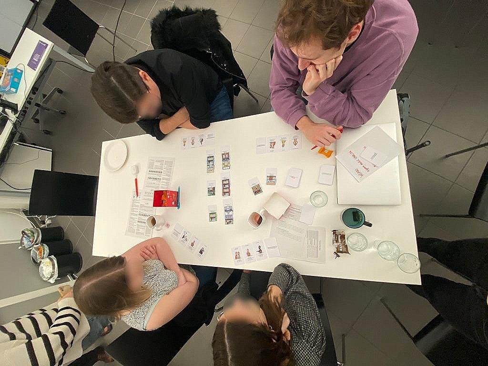

Plan(See)Stadt
–A corporation with Christoff Kügler, Patrick Trollmann and Christina Tüchler–
A game that was created as part of the course 187.B09 Design Thinking: Ideation at TU Wien.
Concept
In a playthrough, players build a city in a 3x3 grid. They can stack cards to build two-story buildings. All building cards have a specific function that interacts with role cards. Players build a shared city round for round in discussion with each other. Each player each turn can suggest to: build a building, abandon a building or move a building. This is done only if a majority of players agree. As each player is following a specific role card's goal, they are all somewhat in conflict with each other. Hence, the main goal of the game is to elicit discussions and raise awareness on the challenges of participatory city planning.
